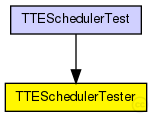
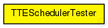

This documentation is released under the Creative Commons license
This documentation is released under the Creative Commons licenseTODO auto-generated module
The following diagram shows usage relationships between types. Unresolved types are missing from the diagram. Click here to see the full picture.
The following diagram shows inheritance relationships for this type. Unresolved types are missing from the diagram. Click here to see the full picture.
| Name | Type | Description |
|---|---|---|
| TTESchedulerTest | network | (no description) |
| Name | Direction | Size | Description |
|---|---|---|---|
| schedulerIn | input |
// // TODO auto-generated module // simple TTESchedulerTester { gates: input schedulerIn @directIn; }
This documentation is released under the Creative Commons license